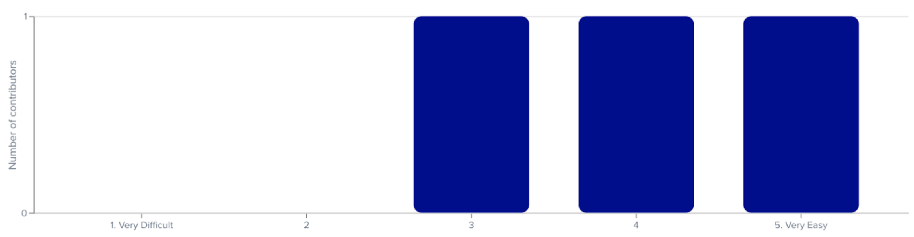

In this project, we work in a group to design an interactive interface for an emerging startup. The startup we chose is Popsy.
Popsy is an online website builder that works like Notion. It doesn’t require any coding background and allows users to make professional websites as easy as writing a document.
The backgound color of the demo site is the same with the homepage. Users may not be able to tell the edge of the demo site. So we added a black border to distinguish the demo section from the home page. (left: before; right: after)
The icons in the edit page are identical. Users may not be able to distinguish different functions of each icon. So we reorganized the left sidebar and added a drop-down box. (left: before; right: after)
Part 3: User Testing
Users and Tasks
Users: ChronicReader(User A), EmlizT(User B), SaraBear7391(User C)
User A completed the task without any error. But we found an interesting point. Every time he performed a new task, he would go back to the home page first. This may be his own usage habit.
User B completed the task without any error. But she was confused by the task of trying the website demo. She didn’t know if she had completed this task.
User C thought the prototype should be fully-functional. Therefore, for the task of trying the website demo, she didn't know where the demo ended. For the task of viewing the template library, she expected that she could scroll down the page or enter a keyword to search for the intended template. For the task of creating the website, she thought she could truly add elements for the customized website. However, the prototype only displays key functions, which are not truly implemented.
How they performed
Task1: Try the demo of the website
Expectation: around 01:00
User A: The user spent 01:27 minutes completing the task.
User B: The user spent 01:42 minutes completing the task.
User C: The user spent 04:07 minutes completing the task.
In summary, all users completed “Try the demo of the website” task. The average time to complete the task was 02:25 which is not as expected. We thought the reasons for users to take such a long time to complete this task are:
(1) The users need time to be familiar with the website.
(2) Our instruction of the task is not clear so they don’t know whether they complete the task or not.
Task2: View the template library
Expectation: within 00:30
User A: The user spent 00:20 minutes completing the task.
User B: The user spent 00:52 minutes completing the task.
User C: The user spent 00:34 minutes completing the task.
In summary, all users completed “View the template library” task. The average time to complete the task was 00:35 which is as expected.
Task3: Create your own website without a template
Expectation: around 01:00
User A: The user spent 01:01 minutes completing the task.
User B: The user spent 00:15 minutes completing the task.
User C: The user spent 00:53 minutes completing the task.
In summary, all users completed “Create your own website without a template” task. The average time to complete the task was 00:43 which is as expected.
Task4: Log out of your account
Expectation: within 00:30
User A: The user spent 00:21 minutes completing the task.
User B: The user spent 00:20 minutes completing the task.
User C: The user spent 00:26 minutes completing the task.
In summary, all users completed “Log out of your account” task. The average time to complete the task was 00:22 which is as expected. x
Overall difficulty

Potential interface changes
Due to the limitation of the pages, it’s impossible to make the website fully interactional. We can add more interactions in the future if possible
We can provide more instructions to guide the new users
We used identical icons in the website editing page, which might cause some confusion. Therefore, we changed the icons to be unique and self-descriptive